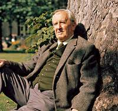

J.R.R Tolkien

J.R.R Tolkien
Quick Facts
Full name: John Ronald Reuel Tolkien
born January 3, 1892
attended King Edward’s School in Birmingham and Exeter College, Oxford
For most of his adult life, he taught English language and literature,
died September 2, 1973 (aged 81)
Read more about Tolkien here .
Work
The Hobbit: or There and Back Again
Farmer Giles of Ham
The Fellowship of the Ring
The Two Towers
The Return of the King
The Adventures of Tom Bombadil and Other Verses from the Red Book
Ancrene Wisse: The English Text of the Ancrene Riwle
Tree and Leaf
Smith of Wootton Major
The Road Goes Ever On: A Song Cycl
Bilbo’s Last Song
Sir Gawain and the Green Knight, Pearl and Sir Orfeo
The Father Christmas Letters
The Silmarillion
Pictures by J.R.R. Tolkien
Unfinished Tales of Numenor and Middle-earth
The Book of Lost Tales, Part I
The Book of Lost Tales, Part II